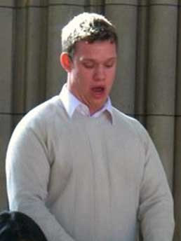
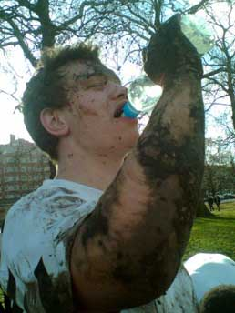

Download Edward's biography for use in programmes and promotional material
Edward Hughes started his singing career singing in the choir at St. Nicholas Church, Chislehurst at the age of eight. While there he worked his way through RSCM awards until he was awarded its highest, the St. Nicholas Award, at thirteen, the same age at which he became Head Chorister of the choir, a position he retained until recently. He was spotted by the Choirmaster at Rochester Cathedral at eleven and offered an audition but he elected not to pursue this. He was also encouraged to enter the BDOCA (Bexley District Organists and Choirmasters Association) annual competition. He won his class each year from the age of nine until the age of twenty-one and also won the shield for best solo under-16 at thirteen and fourteen, the only boy to retain the shield. As a treble soloist, Edward also built up a good local reputation, performing solos with various local choral societies and ensembles, including Fauré Requiem and Bernstein Chichester Psalms. His greatest achievement was being selected by the late Sir Edward Heath to sing the treble solos at his annual charity carol concert, which attracted an audience of around three-thousand every year.
Edward's voice slid down to tenor when he was fifteen, and he then joined the Bexley Choir and Dartford Choral Societies, becoming each choirs' youngest member. Having been awarded a music bursary from Dartford Grammar School, he began lessons with his first vocal teacher Elizabeth Adams, of whom he was very fond. Although voice was his second instrument while at school (behind Oboe) he continued to perform solos with school and church choirs as well as with Bexley Choir and Dartford Choral Society. His first tenor solo performance was at sixteen at school where he was the only student soloist in the quartet for Haydn Nelson Mass. The next year the school performed Mozart Requiem, again with Edward as the only student soloist. On entry into sixth-form, Edward was awarded a music scholarship to assist with his studies in oboe, singing and saxophone. Edward entered the Bromley Music Festival in his last year at school, winning oratorio and recital classes as well as the Rosebowl for best solo adult and the Star Performer's Award, receiving attention from the local press and an article in the local newspaper. In the same year Edward also sang the tenor solos in his first Messiah at the United Reformed Church in Maidstone.
When Edward started at Imperial, he put music to one side and concentrated on university football, reversing the trend he had set himself in his earlier years at school, although he did sing in the university choir and was invited to sing in the Kent Chamber Choir. In the last term of his first year he was given the opportunity to sing a small solo part in a performance of Handel Saul. Realising his mistake, Edward started singing as a soloist more regularly and joined the Royal Choral Society, where he met Richard Cooke, who was to prove an enormous influence. Having sat next to Richard when depping for the choir in 2006, it was suggested that he started lessons. Edward's passion for music and solo singing sky-rocketed and he soon had plenty of choral and solo singing to keep him busy, although this did see the rapid demise of his interest in his degree! At the end of his second year, Edward received an Exhibition Award from Art Imperial. At the end of his third year, Edward received an award to recognise his contribution to extra-curricular activities from his department. In the same summer Edward attended Abingdon Summer School for Solo Singers, where his voice and understanding of performance was revolutionised ready for his music college auditions in the autumn. The Royal College of Music offered him a full-scholarship and further award from the Henry Wood Trust, which he very gratefully accepted.
Edward studied at the Royal College of Music International Opera School with Tim Evans-Jones, having previously completed a Graduate Diploma there. His studies were supported by the Musicians Benevolent Fund, Concordia Foundation, the Gisela Gledhill Award, the Christopher & Susan Gordon-Wells Award and the Wall Trust. He graduated in 2012 and has since become a freelance singer. He sings in the Royal Hospital Chapel, Chelsea and is a member of the Philharmonia Chorus Professional Singer Scheme.
Edward was born in at Queen Mary's Hospital, Sidcup, on 8th September 1986 to parents Ailsa Marie Hughes (née Hones) and Keith Alun Hughes. As a young boy he was into everything – aeroplanes, football, gymnastics, history, judo, scouts and obviously music. He attended Westgate C.P. School in Dartford, where he went on to be appointed as a house captain and the school football captain. He also spent his time at Westgate battling the Piano, an instrument he studied unsuccessfully from the ages of 5-14, although eventually he did fluke his Grade 4.
Edward was keen on sport, particularly football, and has been going to watch Charlton Athletic since the age of 9. He showed talent as a goalkeeper on their youth courses – winning awards for player of the week four times before moving into the footballing academy at 11. However, as music became a larger influence on his life, Edward was forced to reduce his footballing activities, the battle between sport and music would wage throughout his life!
In 1998, Edward started at Dartford Grammar School where he thoroughly enjoyed his time. The school did not offer competitive football however so Edward was forced to embrace rugby instead. Edward was awarded his Junior and Senior Colours for rugby by the school and was a regular starter for the school 1st XV, having broken into the 2nd XV while still in Key Stage 4. Edward also decided to take up the oboe, learning with Jenny Jaggard, on his arrival at the school, which filled his house with a terrible noise for the foreseeable future. On the other hand, his progress on the oboe was infinitely better than his piano playing, if slightly aurally more offensive. In four years Edward had got a merit in his grade 8 exam and was invited to perform an Albinoni Oboe Concerto with the school orchestra. The oboe led to him meeting lots of amazing people in various ensembles including Bexley Youth Band and Orchestra and Kent Youth Wind Orchestra and Schools Orchestra, where he became principle oboe. Edward also learnt the saxophone whilst at school so that he could play in the school Rhythm and Blues Band and promptly received the school Performing Arts tie. In his final year at Dartford Grammar School Edward was selected as a Team Leader Prefect. Edward came upon the idea of engineering as a degree quite late and secured a place in the best university for Aeronautics – Imperial College London.
Edward's time at Imperial was incredible fun and he did scrape an MEng with a 2.2 to boot! While at Imperial Edward did pretty much everything that someone at university could do. He ran for Union President, represented Imperial at both Football and Rugby, played oboe in the Imperial College Symphony Orchestra and Medics' Orchestra, sang in various choirs, conducted the Medics' Chamber Choir, toured with Choir, Medics' Choir, Football team, Symphony Orchestra and Sinfonietta. He even learnt the clarinet in order to play in the pit for the Musical Theatre production of Sweet Charity.
In 2009, the Royal College of Music offered Edward a full-scholarship and further award from the Henry Wood Trust to study for a Graduate Diploma in singing. He started studying with Tim Evans-Jones, with whom he continues to study. He then auditioned for and was accepted into the Royal College of Music International Opera School, again on a full scholarship. Whilst at the RCM, he played in it's football team and played an important role in the welfare of its vocal faculty students by representing them to the RCM and the Vocal Faculty. He also founded London Youth Opera, helping to oversee productions of the Magic Flute and Hansel and Gretel, with the specific purpose of creating further performance opportunities for the students he represented. Edward also started working as a professional chorister, first getting a tenor job at St. Columba's, Pont Street and then successfully auditioning to dep at St Paul's Cathedral. He went on to move from St Columba's to St George's Cathedral in Southwark, where he had the opportunity to sing in the BBC's live broadcast of it's Midnight Mass. Most recently, Edward auditioned for a coveted tenor position at the Royal Hospital Chapel, Chelsea and was very lucky to get it. He is also on the professional singers scheme with the Philharmonia Chorus, which has already seen him tour to Lyon and Hamburg. Having left the RCM in 2012, he began life as a freelance singer and also followed his passion of playing cricket - sadly only one of these things has gone well! He also moved back to the South East of London where he is surrounded by many of his best friends and now enjoys playing squash and pub quizzes with them as often as possible.